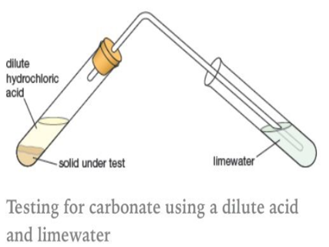

Back to main page
Chapter 11 (Part 2)
Acids and Alkali
Acids and Alkalis (Bases)
Acids and Alkalis are 2 important type of solutions.
Acids
Common laboratory acids:
- Dilute hydrochloric acid
- Dilute sulfuric acid
- Dilute nitric acid
Other types of acids
- Stomach acids – hydrochloric acid
- Carbonated drinks – carbonic acid (wow no way)
- Lemon, lime, oranges - citric acid
- Vinegar - ethanoic acid
- Car batteries – sulphuric acid
Properties of Acids
- Sour taste
- Stronger acids are corrosive
- Produces salt and hydrogen gas when mixed with a reactive metal (MASH)
- Produces salt and carbon dioxide gas when mixed with metal carbonates
- pH level >7
Test for hydrogen gas
Place a lighted splint near the gas (context needed from question), and if the lighted splint is extinguished with a ‘pop’ sound, the gas is hydrogen.
Test for CO2 gas
Pass the gas into lime water. If a white precipitate is formed in the lime water, the gas is carbon dioxide.
Lime water = calcium hydroxide
